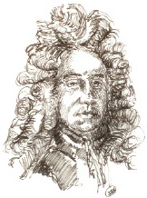

İngiliz saray müziği geleneğinin içine doğan Henry Purcell (1659-1695), Westminster Abbey’deki kraliyet müzisyenlerinden biri olan Thomas Purcell’in oğluydu. Henry, müziğe Kraliyet Şapeli’nde çocuk korusunda başladı, ama hemen, Westminster Abbey’de orgcu olarak iki dönem hizmet eden ve çağın önde gelen İngiliz bestecilerinden biri olan John Blow’un (1649-1708) talebesi oldu. Purcell 1677’de telli çalgılar için basit ama güzel Fantaziler’ini yazarak kraliyet telli çalgılar topluluğu olan Kralın Kemanları’nın bestecisi oldu.

1679’da yirmi yaşındayken Purcell, Kraliyet Şapeli’nde orgcu olarak hocasının yerini aldı ve kilise müziğinin yanı sıra tiyatroya da ara müziği bestelemeye başladı. 1689’da Dido ve Aeneas isimli en ünlü opera eserini yazdı. O zamanlar opera İngiltere’de pek popüler değildi; çoğu besteci danslı oyunu, İtalyan oratoryolarının melez bir birleşimini, laik Fransız müziğini ve İngilizce şarkıları tercih ediyordu.
Dido ve Aeneas çoğu modern operadan ölçek olarak çok daha küçüktü. Libretto, veya operanın metni, Kartaca Kraliçesi Dido’ya aşık olup sonra onu terk eden, Truva Savaşı’ndan evine dönmek üzere yollardaki bir kahraman olan Aeneas ile ilgilidir. Solocular, korolar ve enstrümantal dansların karışımı olan Purcell’in versiyonunda, kısıtlı sayıda ana şarkıcıya ihtiyaç vardı. Müziğin en iyi bilinen kısımlarının çoğu bas melodi fikrine –üzerine eklenen farklı melodilere eşlik eden tanıdık, bildik tonlar üreten alçak sesli enstrümanlardaki basit ve tekrarlı tema– dayalıydı. Purcell’in temaları, bas melodilerin kısıtlamalarına rağmen dramatiktir ve insanı yakalar. Sonuç, İngiliz besteciler için çığır açan bir eser oldu.
Purcell, Wolfgang Amadeus Mozart ve ondan sonra gelen Franz Schubert gibi, genç yaşta öldü. Buna rağmen, tüm zamanların en büyük İngiliz bestecilerinden biri kabul edilir ve eserlerine Ralph Vaughan Williams ve Benjamin Britten gibi geç dönem İngiliz bestecileri tarafından övgüler yağdırılmıştır.
EK BİLGİLER:
1. Purcell’in Dido ve Aeneas’ı İngilizce yazılan ilk gerçek operaydı. Önceki eserlerden farklı olarak bu, konuşma kısmını yerine getirmek üzere sanatçılara durak vermeyerek, tümüyle müzikten oluşuyordu.
2. Purcell, ilk eseri olan kısa bir parçayı sekiz yaşında yayınladı.
3. Purcell tarafından yazılan iki ulusal marş, Kalbim Yazıyor ve Sen Tanrım, Kalplerimizdeki Sırları En İyi Bilen, II. James’in taç giyme töreninde ve Kraliçe Mary’nin cenaze töreninde kullanıldılar.